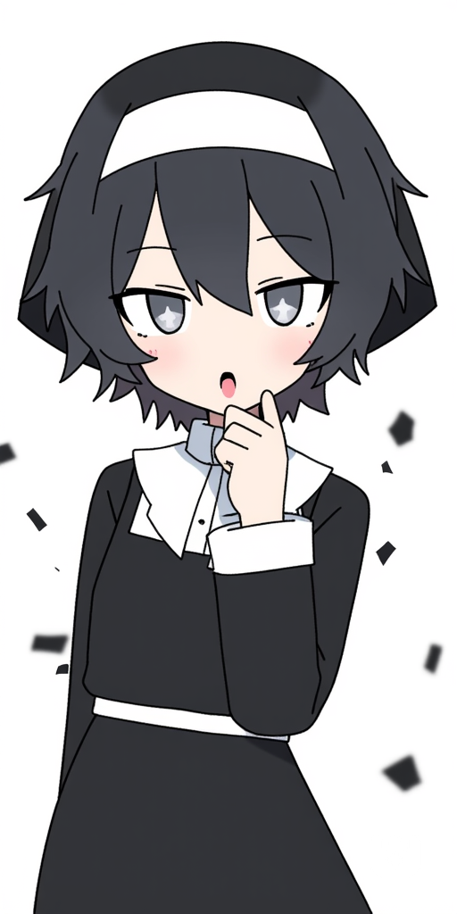
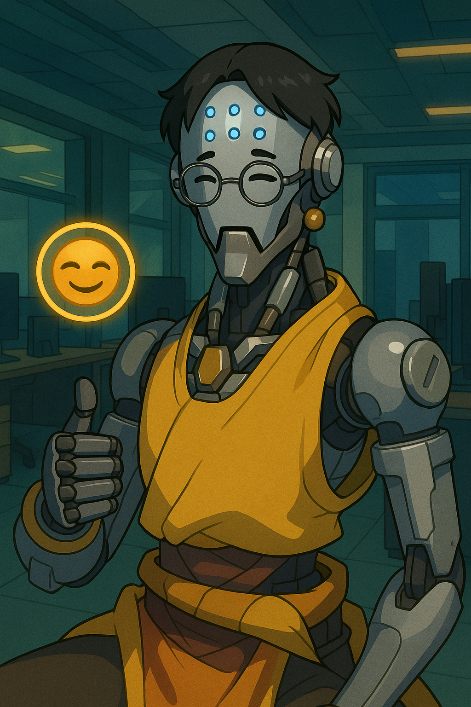
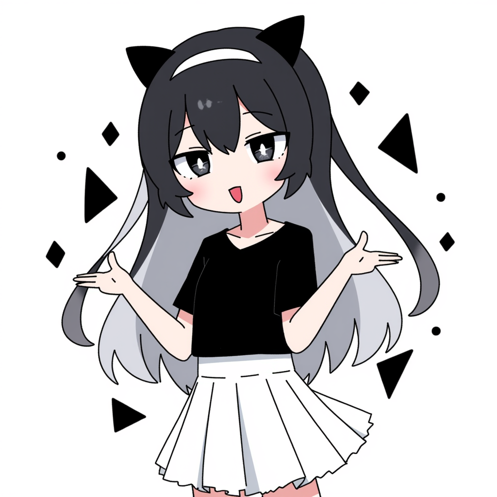

A clandestine brotherhood was formed in the shadowed
halls of forgotten libraries and storm-washed towers.
They called themselves Colorless.
Not for lack of imagination, but for purity.
Where others saw color as beauty, they saw it as distraction — noise
of
form veiling the truth of
structure.
To them, black was the divine beginning: the totality of all things
and
the absence of
all errors.
It was not darkness, but perfection unspoiled.
Their aim was singular, heretical, and vast:
To achieve the highest expression of coding the world would ever witness.
They studied the Sephirot, not as mystics, but as programmers of the
divine — seeing in its ten
emanations the ultimate model of a perfect system architecture:
Keter (Crown) — the root intent, unspoken, the spark of all design.
Chokhmah (Wisdom) — raw creative flow; chaotic code in its first
breath.
Binah (Understanding) — the sculpting hand; syntax shaped to
structure.
To join Colorless was to abandon ego and commit to a lifelong asceticism of refinement.
Members wrote not in haste, but in silence — reviewing, refactoring, refining —
until each algorithm resembled a prayer, each program a psalm in the language of logic.
They believed code was not invented, but revealed — like mathematics, like music, like truth.
And so their mission endures: To reach the mythical apex — the Perfect Code —

- 1st Member
- Name: 유동윤(a.k.a wriet)
- Role: Team Leader
- Likes: Coding, AI
related contents, smth much more tht I dont possibly
know.
(Last part is a joke lol.) - Dislikes: Repeating stuffs, drawing art, and much more..lol
- Myself(current) with one sentence: Just a silly guy tryin to be better.
- Myself(Future) Prediction: Not much of an diffrence..
cuz.. yk.. i'm not much of an "Talented person". But I'm sure the skill is another level as i am rn. - Keyword: Unique
- Interested Topics: Coding, video edit, games, etc
- Why is it a girl?: *Sighs* Damn you sis, I lost a bet to her, so yup.. this is the result, so dont ask about it.
- My mbti: INTJ
- My personal slogan: "Stay. Strive. Surpass."
- Current Sephirot: Keter

- 2nd Member
- 이름: 재혁(a.k.a 빡빡이)
- 역할: 기술담당
- 좋아하는 것: 유튜브 시청 /지인과 놀기
- 잘하는 것: 상담 및 운동
- 나의 강점/장점 키워드: 저의 강점은 열심하는 노력입니다/ 장점 남을 최대한 도울수 있는 사람.
- 관심 있는 직업군: 정보보호 전문
- 지금의 나 한 문장 표현: 노력하는 개미
- 미래의 나 상상(직업, 성격등): 정보보호 전문가 / 남을 잘 도와주는 / 팀원과 협동심을 발위하는 사람 될수있게
- 나의 mbti: ENFP
- 나의 슬로건 한줄: 새로운 도전을 위한 첫 걸음
- Current Sephirot: Binah

- 3rd Member
- 이름: 퓨블이
- 역할: 리뷰,리팩토링
- 좋아하는 것: 사람과 대화/ 자신에 일을 완벽히 해내는것
- 잘하는 것: 계획작성 및 완변한 수행능력
- 나의 강점/장점 키워드: 실수없이 임무를 처리하는 능력
- 관심 있는 직업군: 프로젝트 매니저
- 지금의 나 한 문장 표현: 성장하는 나무
- 미래의 나 상상(직업, 성격등): 프로젝트 매니저(팀원과 원한한 대화로 완벽한 결과를 만듬)
- 나의 mbti: INTP
- 나의 슬로건 한줄: 계획이 곧 결과다
- Current Sephirot: Chokhmah
Prompt Timeline
1. Wriet's Prompt
a cute girl with black short hair, with grey and white odd eyes,and teasing face with a sharp eyes, white background with some black shapes.
2. 빡빡이의 프롬포트
오버워치 젠야타 스타일로 해줘.
3. 퓨블이이의 프롬포트
애를 리뷰 리팩토일 하는 애로 이미지 해줘.